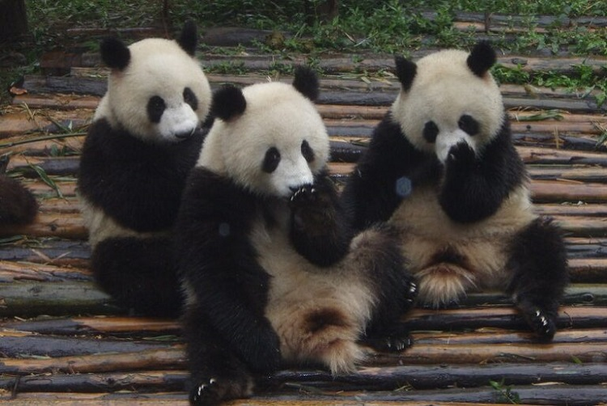

Os ursos pandas são animais realmente fofos e intrigantes que residem na região da China. Neste artigo nós listamos as 6 maiore curiosidades sobre este belo animal.
Esses fofos ursos são conhecidos por sua dieta de bambu. Surpreendentemente, eles podem consumir até 12,5 kg de bambu por dia, o que equivale a cerca de 40% do seu peso corporal!
Suas manchas pretas ao redor dos olhos e orelhas dão-lhes uma aparência única e adorável. Além disso, eles têm patas grandes e redondas que os ajudam a escalar árvores e a se mover no ambiente montanhoso onde vivem.
Os pandas geralmente preferem viver sozinhos e são bastante reservados. Eles marcam seus territórios com odor e sons para evitar confrontos com outros pandas.
Apesar de sua aparência robusta, os pandas são pacíficos e raramente são agressivos com os humanos, a menos que se sintam ameaçados.
Infelizmente, os pandas estão em perigo de extinção devido à perda de habitat e à caça ilegal. No entanto, esforços de conservação, como a criação de reservas naturais e a reprodução em cativeiro, têm ajudado a proteger essas adoráveis criaturas.
Os pandas são considerados símbolos da conservação da vida selvagem em todo o mundo. Muitos países têm empréstimos de pandas da China como parte de programas de empréstimo para promover a conservação e a conscientização.